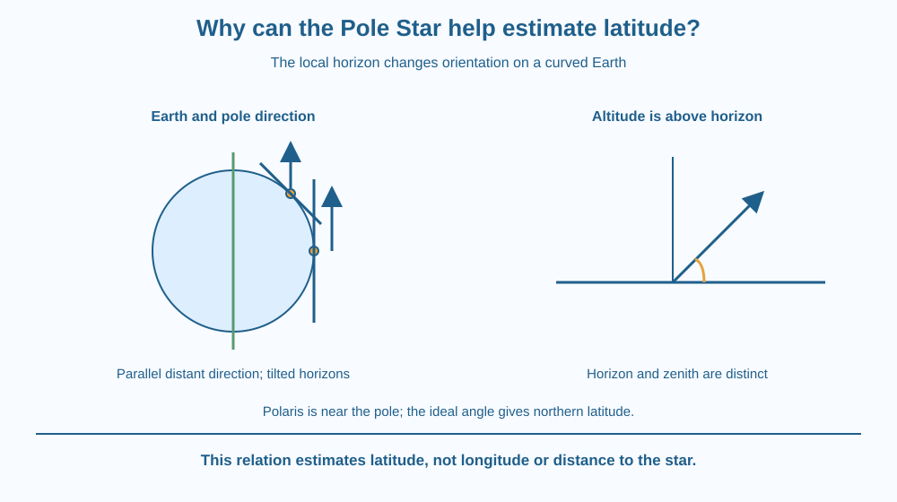

Explain why the altitude of a star near the north celestial pole approximates an observer's northern latitude. Distinguish altitude above the horizon from distance below the zenith. Use Polaris as a geometric reference without relying on magnetism or claiming it lies exactly on the celestial pole.
An observer far north sees Polaris high in the northern sky, while an observer nearer the equator sees it lower. The star has not moved closer to one person to reward their location. Their horizons are oriented differently on a curved Earth.
Polaris lies near the direction in which Earth's north axis points. Comparing that direction with a local horizon creates a useful angle. The relation links a distant reference direction with position on the planet rather than with a compass needle's magnetic alignment.
The geometry is approximate for Polaris because it is near, not exactly at, the pole.
The north celestial pole is the direction of Earth's north rotational axis projected onto the sky. Polaris, the Pole Star, lies close to that direction. It is therefore a convenient approximate marker in the Northern Hemisphere.
A star's altitude is its angle above the local horizon. It is not the star's physical height in kilometres or its angular distance from the point directly overhead. The directly overhead direction is the zenith.
At the North Pole in an idealised model, the north-axis direction is overhead. Its altitude is about a right angle above the horizon. At the equator, that same axis direction lies near the horizon.
Between those extremes, the local horizon tilts relative to the axis direction as the observer's latitude changes. In the ideal pole-direction model, the altitude of the north celestial pole equals northern latitude. Polaris provides a nearby approximate reference for that direction.
For a hypothetical observer at 20 degrees north latitude, the pole direction is about 20 degrees above a clear northern horizon. This is a geometric example, not a surveyed reading from a named Indian city.
The horizon must be understood correctly. A nearby hill or rooftop is not automatically the true level horizon. Measuring above an obstructing skyline can introduce an error unrelated to the star. Atmospheric refraction can also affect a precise apparent altitude, especially near the horizon.
Polaris is not visible as a useful above-horizon northern reference from every location on Earth. Southern observers use different sky geometry and references. A Northern Hemisphere rule must not be extended carelessly to a star below someone's horizon.
The method estimates latitude, not longitude. It also does not tell you your distance from the star. One angular measurement can answer a particular positional question without containing every piece of navigation information.
Draw a circular Earth with a north axis. Put observers at the equator, an intermediate northern latitude and the pole. At each location, draw the local horizon tangent to the circle.
Now draw the distant pole direction as parallel lines, because the reference is extremely far compared with Earth's size. Compare each line with its local horizon. The angle increases as the observer moves north.
Keep the horizon and zenith perpendicular in every local frame. This prevents the common mistake of measuring from overhead and calling that the altitude. The same fixed external direction can have different local angles because the observer's frame changes.
The SVG shows a circular Earth section, its axis and two observer positions. Local horizon segments touch the circle, while parallel pole-direction arrows provide the distant reference.
A separate angle panel contrasts altitude above the horizon with distance from the zenith. The caption identifies Polaris as an approximate marker rather than the exact mathematical pole.
The drawing is not to scale and does not mark a precise star offset or atmospheric correction. Its purpose is to explain the latitude relation, not provide a complete navigation instrument or a real city's surveyed position.

People have used celestial directions for navigation long before modern electronic positioning. The useful idea is that a distant reference and local geometry can reveal information about location.
Across northern Indian locations, a change in latitude corresponds to a change in the pole direction's altitude. An exact real observation would require correct identification, a suitable horizon and careful angle measurement. A casual estimate should not be presented as a precise navigation fix.
Students do not need to travel outside at night or use rooftops. Paper geometry is sufficient. Never aim an optical device near the Sun or use an improvised sky observation for safety-critical navigation.
Use paper, a ruler and a protractor if available. No outdoor observing is needed.
Label the pole-direction model idealised. A drawing error or thick pencil line does not measure actual latitude. The exercise explains why the angle changes; it does not identify Polaris, account for all observational corrections or determine longitude.
Why does a hill blocking the northern horizon complicate a direct angle reading? Distinguish the visible skyline from the geometric horizon used by the model.
Now consider moving north without moving much east or west. Which coordinate does the pole-altitude relation help track? Explain why it does not simultaneously provide longitude or the physical distance to the star.
What does a star altitude mean in this lesson?
Answer: C — Altitude is an angular height above the local horizon.
Why does pole-direction altitude change as an observer moves north?
Answer: B — Different positions on a curved Earth have differently oriented local horizons.
The ideal north-pole direction is 20 degrees above a true horizon. What is the model estimate?
Answer: A — In the ideal Northern Hemisphere relation, pole altitude equals latitude.
Create a guide for interpreting a pole-star altitude diagram. It must name the horizon, zenith, celestial pole and latitude, and it must state that Polaris is only near the pole.
Include one hypothetical northern-latitude example and one observational limitation. Keep the activity on paper and avoid claiming a surveyed city value. Your guide should distinguish geometric understanding from a complete practical navigation system.
The same distant direction can appear at different altitudes because the observers stand on differently tilted local horizons. The star need not move to explain the change. Curved-Earth geometry turns a nearly fixed sky reference into information about where an observer is located.
The north celestial pole's altitude equals northern latitude in the ideal model; nearby Polaris offers an approximate reference when a suitable horizon is available.